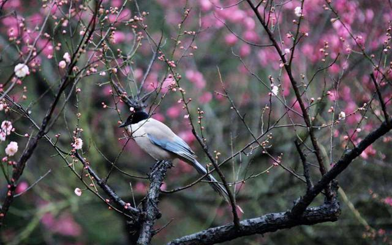
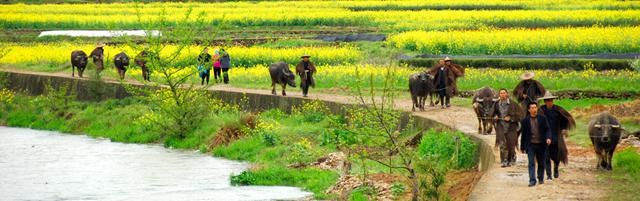
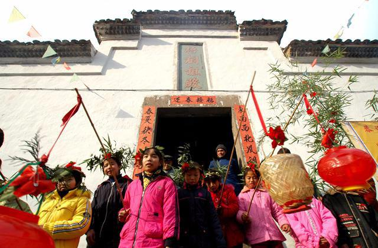
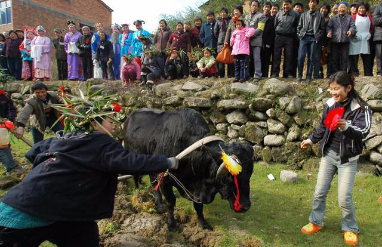
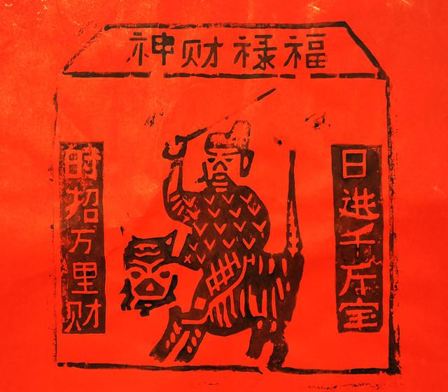
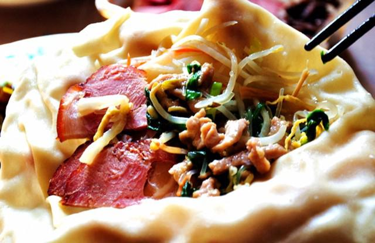

立春是二十四节气的第一个节气。每年2月3日至5日，太阳到达黄经315°时为立春。2018年的立春时间是2月4日（农历丁酉年腊月十九）。
“立”是“开始”的意思，立春是天文意义上春天的开始。立春之后，万物复苏、生机勃勃，四季交替周而复始。立春期间，气温上升，日照、降雨趋于增多，对全国大多数地区来说，立春即是春天的前奏。

立春以后，白天逐渐增长，气温慢慢回升，土壤由下层开始化冻，这期间仍有强寒潮侵袭，天气干旱，常有大风和降雪。大部分地区陆续进入春耕大忙季节，农业生产仍要预防低温和雨雪天气带来的不利影响，需要抓紧对越冬作物的田间管理，防冻保苗。
“一年之计在于春”，立春也是最受农民重视的节气。有关立春的天气谚语很多，如以晴天无雨为依据的有“立春晴，雨水匀”、“立春晴，一春晴”；以雨雪为依据的有“立春雨淋淋，阴阴湿湿到清明”、“打春下大雪，百日还大雨”；以雷电为依据的有“雷打立春节，惊蛰雨不歇”、“立春一声雷，一月不见天”；以冷暖为依据的有“立春寒，一春暖”；以风力为依据的有“立春北风雨水多”、“立春东风回暖早”、“立春西风回暖迟”等等。有关农事及气候的节气谚语还有：
迎春 迎春是立春的重要活动，须事先做好准备，进行预演，俗称“演春”，目的是把春天和句（gōu）芒神接回来。句芒为古代民间神话中的春神，即草木神，也是主宰生命生长之神。
在浙江衢州九华立春祭活动中，迎春仪式是一项重要内容。迎春祭祀前，要预备“迎春接福”案桌，将案桌放置在梧桐祖殿大门外正中位，在案桌前披上写有“迎春接福”字样的红纸（锦），案桌中间放饭甑，盛得尖满，甑后置一杯清茶，左右放置香炉、烛台、梅花、松柏、竹枝等，象征洁净、长青和富足。在交春时刻前，主殿开门迎春；交春时刻，鸣放鞭炮，焚香行祭礼迎春。
鞭春牛 又称打土牛、打春、鞭春，是汉族和白族立春的主要习俗。古代立春时举行鞭春之礼，既是鼓励农耕，也承载着人们对五谷丰登的美好期盼。《燕京岁时记》记载：“立春先一日，顺天府官员，在东直门外一里春场迎春。立春日，礼部呈进春山宝座，顺天府呈进春牛图，礼毕回署，引春牛而击之，曰打春。”
鞭春牛的习俗在各地广为流传。浙江衢州九华立春祭中，由人扮句芒神，鞭打春牛，以表示劝农勤劳和春耕的开始。在浙江遂昌的班春劝农习俗中，鞭春牛也是其中的重要环节。山东民间要把土牛打碎，人们争抢春牛土，谓之“抢春”，以抢得牛头为吉利。山西民间流行着这样的春字歌：“春日春风动，春江春水流。春人饮春酒，春官鞭春牛。”有的地方是在墙上贴一幅画有春牛的黄纸，黄色代表土地，春牛代表农事，俗称“春牛图”。除了皇历上有春牛图外，各地年画中也普遍刻印春牛图，作为春节期间的吉祥图。
说春 “说春”是贵州石阡侗族人民世代流传下来的一种在立春时节扮装“春官”说唱歌谣、劝农劳作的民俗表演活动，旨在祝福风调雨顺、丰衣足食。
“春官”是周代一种职官，执掌农耕事务。后世民间出现扮装春官的说唱艺人在农村走家串户表演，形成一种劝农祈福的“春官送春”习俗，说唱者又被俗称为“春倌”。
咬春 咬春是指立春日吃春盘、吃春饼、吃春卷、嚼萝卜之俗，一个“咬”字，道出节令的众多食俗。
